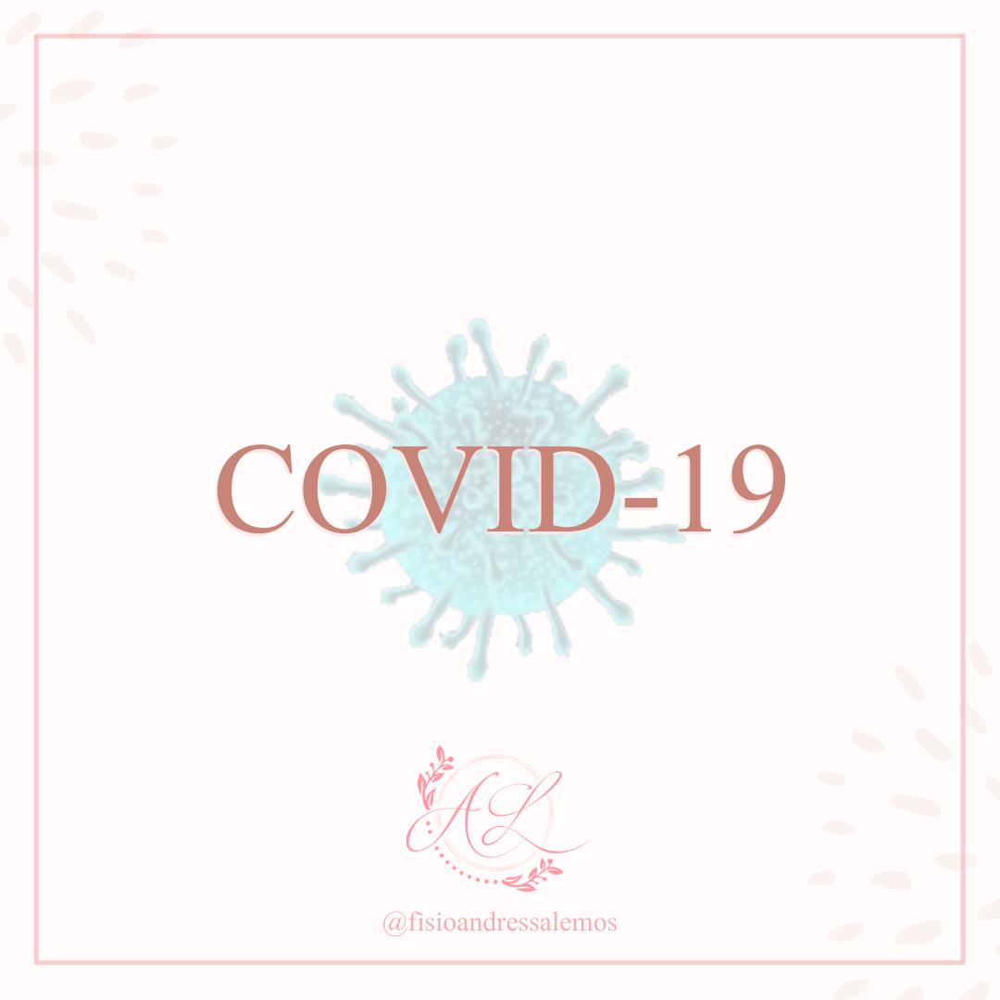
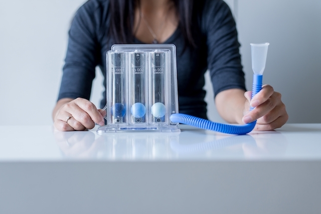
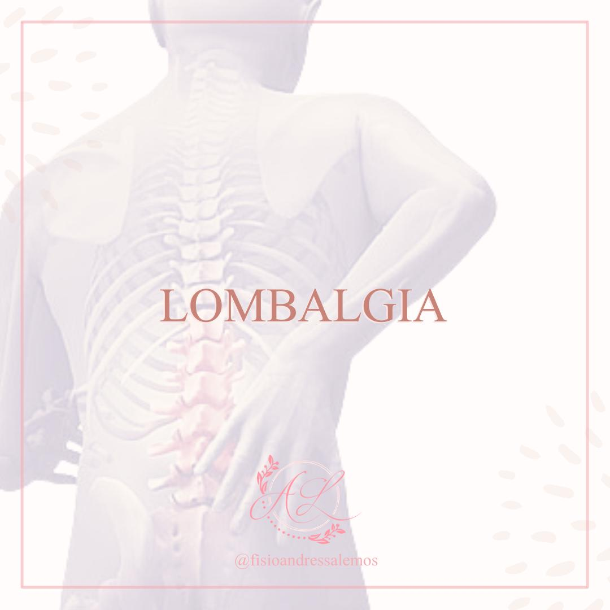

Quem sou eu
Pós-graduanda em Fisioterapia Pélvica - Uroginecologia Funcional pela Faculdade Inspirar, graduada em Fisioterapia pelo Centro Universitário Avantis - UNIAVAN (2020).
Formação Acadêmica
2021 - Especialização em andamento em Fisioterapia Pélvica - Uroginecologia Funcional. (Carga Horária: 380h).
Faculdade Inspirar, INSPIRAR, Brasil.
2018 - 2020
Graduação em Fisioterapia.
CENTRO UNIVERSITARIO AVANTIS, UNIAVAN, Brasil.
Título: PRESENÇA DE ALTERAÇÕES DA FORÇA MUSCULAR RESPIRATÓRIA EM MULHERES COM FIBROMIALGIA: REVISÃO SISTEMÁTICA.
Orientador: Bianca Dana Horongozo Itaborahy, Sabrina Weiss Sties.
2014 interrompida
Graduação interrompida em 2017 em Fisioterapia.
Universidade do Vale do Rio dos Sinos, UNISINOS, Brasil.
Ano de interrupção: 2017
Formação Complementar
2020 - 2020
Atenção Integral às Crianças com Alterações do Crescimento e Desenvolviment. (Carga horária: 30h).
Fundação Oswaldo Cruz - Pernambuco, FIOCRUZ PE, Brasil.
2020 - 2020
Abordagem do Sobrepeso e Obesidade na Atenção Primária em Saúde. (Carga horária: 30h).
Universidade Federal de Santa Catarina, UFSC, Brasil.
2020 - 2020
O novo coronavírus e a COVID-19. (Carga horária: 15h).
Universidade Federal do Maranhão, UFMA, Brasil.
2020 - 2020
Respiração na prática clínica. (Carga horária: 5h).
Instituto Golden, GOLDEN, Brasil.
2020 - 2020
Saúde da Mulher. (Carga horária: 60h).
Universidade Federal de São Paulo, UNIFESP, Brasil.
2020 - 2020
Hemograma, Anemia e Linfadenopatia. (Carga horária: 30h).
Universidade Federal de Ciências da Saúde de Porto Alegre, UFCSPA, Brasil.
2020 - 2020
Primeiros Socorros para Profissionais de Saúde. (Carga horária: 40h).
Instituto Federal do Rio Grande do Sul, IFRS, Brasil.
2020 - 2020
Ventilação Mecânica Básica. (Carga horária: 15h).
Instituto Israelita de Ensino e Pesquisa Albert Einstein, IIEPAE, Brasil.
2020 - 2020
Mechanical Ventilation for COVID-19. (Carga horária: 20h).
Harvard Medical School, HARVARDX, Estados Unidos.
2020 - 2020
Classificação Internacional de Funcionalidade, Incapacidade e Saúde. (Carga horária: 20h).
Conselho Federal de Fisioterapia e Terapia Ocupacional, COFFITO, Brasil.
2020 - 2020
Introdução a Ventilação Mecânica. (Carga horária: 20h).
Hospital Sírio-Libanês, SIRIO-LIBANÊS, Brasil.
2020 - 2020
COVID-19 Contact Tracing. (Carga horária: 10h).
Johns Hopkins University, JHU, Estados Unidos.
2020 - 2020
Prevenção e controle de infecções causadas pelo novo coronavírus (covid-19).
Universidade Federal do Rio Grande do Norte, UFRN, Brasil.
2020 - 2020
Manejo clínico da COVID-19 na Atenção Especializada. (Carga horária: 15h).
Universidade Federal de Minas Gerais, UFMG, Brasil.
2020 - 2020
Manejo e acompanhamento do paciente com suspeita de coronavírus. (Carga horária: 10h).
Universidade Federal do Rio Grande do Norte, UFRN, Brasil.
2020 - 2020
Coronavirus (COVID-19): Manejo dos Casos Suspeitos. (Carga horária: 1h).
Instituto Israelita de Ensino e Pesquisa Albert Einstein, IIEPAE, Brasil.
2020 - 2020
Prevenção e controle de infecções causadas pelo novo coronavírus (covid-19). (Carga horária: 5h).
Universidade Federal do Rio Grande do Norte, UFRN, Brasil.
2020 - 2020
Covid-19: Cuidado de idosos em instituições de longa permanência. (Carga horária: 5h).
Universidade Federal do Rio Grande do Norte, UFRN, Brasil.
2020 - 2020
Princípios da Liberação Miofascial. (Carga horária: 3h).
Instituto Golden, GOLDEN, Brasil.
2020 - 2020
Curso de Pilates em Equipamentos, Acessórios e Solo. (Carga horária: 24h).
Gonzáles, GONZÁLES, Brasil.
Especialidades
Pilates
🤸🏻♀️ Método de condicionamento físico criado por Joseph H. Pilates (1883-1967), com a finalidade de combinar a respiração com os movimentos do corpo, promovendo o fortalecimento muscular e a circulação, melhora do condicionamento físico geral e da flexibilidade, melhora do equilíbrio e favorecimento da postura, além de aprimorar os níveis de consciência corporal e coordenação motora. 🤸🏻 Os exercícios podem ser feitos por qualquer pessoa (atletas, sedentários, idosos, crianças, gestantes), seja feito de maneira individual ou em pequenos grupos, utilizando aparelhos (criados por J. Pilates), bem como sem os aparelhos, como nos movimentos realizados no chão (mat pilates). 🤸🏻♂️ A atividade é direcionada às necessidades individuais de cada aluno.
COVID 19
🦠 Desde o início do ano de 2020 o Brasil vem se ajustando a novas regras de convivência social, consequência de uma pandemia causada pelo novo Coronavírus, denominado SARS-CoV-2, vírus que causa uma patologia infecciosa grave, chamada de COVID-19.
🦠 Os primeiros casos foram relatados como uma pneumonia viral não identificada, que logo teve evolução para a síndrome do desconforto respiratório agudo (SDRA).
🦠 No dia 30 de janeiro de 2020, a Organização Mundial de Saúde (OMS) declarou emergência de saúde pública, e em 11 de março do mesmo ano a reconheceu como uma pandemia, visto que em menos de três meses a COVID-19 se espalhou rapidamente em vários países (cada pessoa infectada tem a capacidade de transmitir a doença para 3 a 5 pessoas em média).
🦠 Estudos apontam que a presença de comorbidades como diabetes, doença pulmonar obstrutiva crônica (DPOC) e hipertensão arterial podem agravar o quadro clínico do indivíduo infectado, podendo desencadear quadros de dispnéia e sintomas torácicos graves, tendo potencial em idosos.
🦠 Os indivíduos gravemente acometidos pela infecção acabam permanecendo muito tempo acamados, gerando uma inatividade física prolongada na maioria dos casos, podendo agravar algumas patologias pré-existentes, sendo elas cardiovasculares, respiratórios e musculares.
🦠 Tendo em vista que esses pacientes graves posteriormente irão apresentam sequelas físicas, sendo resultado da imobilidade prolongada, onde inclui a instabilidade postural, tromboembolismo, úlceras de pressão, dentre outras, a fisioterapia vem se destacando a cada dia mais no âmbito hospitalar e vem ganhando um espaço que é fundamental para a recuperação dos pacientes acometidos pela COVID-19 desde o início da pandemia.

Fisioterapia Respiratória
A fisioterapia respiratória é uma especialidade da fisioterapia que visa a prevenção e o tratamento de praticamente todas as doenças que atingem o sistema respiratório como a asma, bronquite, insuficiência respiratória e tuberculose, por exemplo. Ela deve ser sempre realizada pelo fisioterapeuta em casa, na clínica, no hospital ou no trabalho.

CURIOSIDADES
• A lombalgia é o desconfortou ou dor (de intensidade variável) que ocorre na região lombar, e que muitas vezes está associada a desordens musculoesqueléticas dessa região. • É a segunda doença crônica mais prevalente no país, apontada como um problema de saúde pública mundial, com impacto negativo na qualidade de vida e na funcionalidade do acometido, ocasionando uma série de alterações na mecânica corporal, como diminuição da amplitude de movimento, redução da flexibilidade e fadiga dos músculos paravertebrais. • De origem multifatorial ou inespecífica, na maioria das vezes, não se consegue associar sua ocorrência a uma condição clínica específica. • É consenso entre diversas pesquisas a fisioterapia ser adotada como método de primeira escolha no seu tratamento, buscando promover a melhora do quadro álgico (dor), da funcionalidade e da qualidade de vida a partir da melhora das condições musculoesqueléticas, da diminuição da tensão e do estresse, além do potencial ganho de força muscular.
